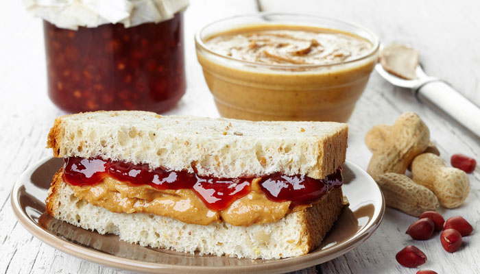

Peanut Butter & Jelly

Description:
A recipe for a delicious Peanut Butter and Jelly sandwhich.
A peanut butter and jelly sandwich consists of peanut butter and fruit preserves—jelly—spread on bread. The sandwich may be open-faced, made of a single slice of bread folded over, or made between two slices of bread.
Ingredients:
- Bread
- Peanut Butter
- Jelly
Steps:
- Gather Your Ingredients for the Sandwhich
- Pull Out Two Slices of Bread
- Open the Peanut Butter and Jelly
- Spread the Peanut Butter Onto One Slice of Bread
- Spread the Jelly Onto the Other Slice of Bread
- Combine the Two Slices
- Cut off the Crusts (optional)